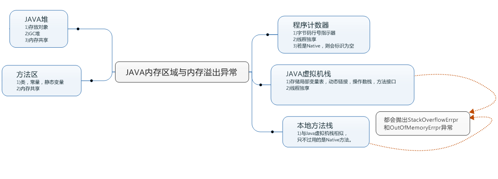

运行时数据区域概要图

1)程序计数器（Program Counter Register）：是一块较小的内存空间，是当前线程所执行的字节码的行号指示器。字节码解释器就是通过改变程序计数器的值来实现程序的分支，跳转，循环，异常处理，线程恢复等功能。多线程的实现是通过处理器的不断切换切割处理时间来实现的，每个线程都有自己的程序计数器，所以程序计数器是线程独立的。如果正在执行的程序是一个java方法，那么程序计数器的值是字节码指令的地址，如果是native方法，则程序计数器则是undefined。
2)Java 虚拟机栈 （JAVA Virtual Machine Stacks）:Java 虚拟机栈描述的是Java 方法的运行内存模型。Java方法在运行的时候，都会创建一个栈帧，用来存储局部变量，操作数栈以及方法出口等等信息。局部变量所需要的内存大小在编译期间已经确认，当线程进入一个方法的时候，局部变量的大小是不会改变的。此存储空间会有两种异常1.当线程请求的内存大于虚拟机所允许的深度时——>StackOverFlow。2.虚拟机可以动态扩展，当动态扩展无法申请到内存的时候——>OutOfMemoryError
3)本地方法栈： 跟JAVA虚拟机栈差不多，本地方法栈为Native方法服务。同样有StackOverFlow 和 OutOfMemoryError两种异常
4)Java堆: 是一块线程共享的存储区域，几乎所有的java对象都在这边存储，因此是垃圾收集器的主要管理区域，因此成为GC 堆(Garbage collection Heap)。至于收集算法有的分为新生代和老年代。从存储分配的角度来看，可能划分为多个线程私有的分配缓冲区（TLAB）。Java堆可以通过Xmx- 和 Xms-来进行扩展，若是没有足够的内存进行扩展，则抛出OutOfMemoryError。
5)方法区: 跟Java堆一样，方法区是一块线程共享的存储区域。其存放的是类信息，常量(final)，静态变量（static），即时编译后的代码信息。特例:HotSpot用永久代的方法实现了方法区的内存回收。Java可以用参数-XX： MaxPermSize 扩展此区域，若是无法申请内存，一样抛出OutOfMemoryError异常。
6)运行时常量区: 运行时常量区是方法区的一部分，用于代码编译时期产生的类描述，符号引用以及直接引用。
7)直接内存(Direct Memory)： 直接内存又称为堆外内存，与堆的大小无关。在分配内存的速度上有优势，但是创建和销毁对象成本很高。